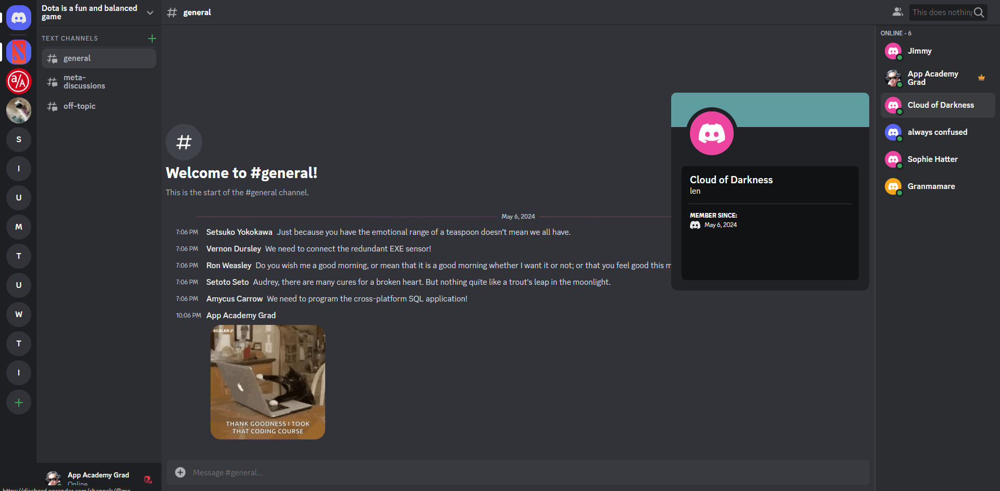

Projects
Dischord
Background
This is probably my favorite project! Dischord is a full stack clone of the beloved web-based gaming-turned-community-building messaging application Discord.
Features
Live Messaging: Nobody wants to have to reload the page to view the cat GIFs their friends are sending them. Through Action Cable, the current Dischord server channel on the frontend establishes a stateful, persistent WebSockets connection with the Rails server and receives broadcasted updates whenever a message is created, updated, or destroyed. Those changes are transmitted to Redux and the content renders live, allowing instant messaging and meme-propagation.
AWS Integration: Dischord supports user-uploaded media in the form of message attachments (cat GIFs, memes, etc) and server icons. Attachment data is stored using ActiveStorage tables that point to items in a cloud S3 bucket.
CRUD Functionality: Backend API endpoints allow for full Create, Read, Update, and Destroy (CRUD) actions on the database, all actions are passed through layers of frontend and backend validations as well as database level constraints. Users, servers, channels, and messages all have this functionality.
Pet Portal
Background
Pet Portal is a web application designed to simplify pet care management for pet owners. With Pet Portal, users can create profiles for their pets, track their health records, and set reminders for important events like vaccinations, preventatives, and appointments. The platform aims to streamline the pet care process, providing users with a centralized hub for managing some common aspects of their pets' health.
A group project with 3 other developers.
Features
All features are accessible by logging in!
Pet Features: Users can add pets to their households, view their pets on their dashboard, and view a detailed summary of their pet's information and reminders on their profiles. And because pet profiles can't be complete without a cute photo of your pet, we've integrated AWS cloud storage to facilitate it. :)

Reminders: Want a better place to manage those reminder cards and documents stuck to your fridge door or piled up in a drawer? Create appointment, vaccination, and medication reminders for your pets! The dashboard gives an overview of any reminders coming up for all of your pets, and the pet profile gives you a detailed view of those reminders.

Exoplanet Explorer
Background
Exoplanet Explorer is a data visualization project that aims to display and interpret known information about a random exoplanetary system obtained from the NASA Exoplanetary Archive.
An exoplanetary system is a star system that isn't ours, that also has planetary bodies orbiting around one or more host stars. There are over 5000 exoplanets currently discovered. This project takes you on an imaginative and possibly informative journey to these alien worlds, and hopefully inspire you to wonder what life might be like outside of our home system.
Features
Stellar Data: Each star system fetched from NASA's exoplanet archive is rendered using Canvas. The size & color of the star are based off its measured or calculated radius relative to that of the Sun, and its stellar effective temperature. Red indicates a 'cooler' star, with temperatures around or below 3500 K. A large proportion of stars fall into a middle category of about 4000 - 7000K. You might even find a white dwarf or two in the mix!
Planetary Data: Each planet's orbit simulation is derived from its semi-major axis (The longest radius of an elliptic orbit, or the projected separation in the plane of the sky) and orbital period (the number of days it takes to complete a single rotation around its star.) The range of values is extreme, from one day to over 12,000 days, and 0.05 to over 1000 AU. That being said, heavy liberties were taken while scaling and tuning data to ensure practicality of orbit visualization. I utilized d3's linear and logarithmic scaling functions to help maintain integrity of planetary movement while keeping it in a visually absorbable range of pixel values. Planets also have been colorized based on their equilibrium temperatures. Red-orange suggest higher temperatures, green is around 550 K (Earth's EQT is about 550 after other factors.), and blue is less than ~400 K. Gray bodies don't have data available for colorization.
Hovering over a planet highlights it with a target circle to aid tracking of its movement and reference to which planet's card is currently rendered.